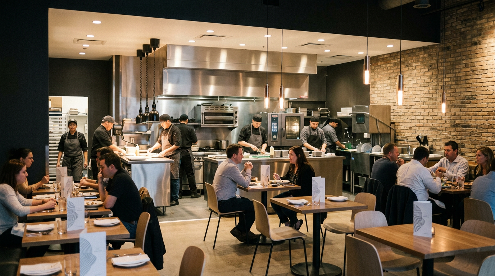

Restaurants, cafés, and food service businesses rely on financing to purchase kitchen equipment, refrigeration, and POS systems—and to cover payroll, inventory, leasehold improvements, and renovations. Axiant Partners connects restaurateurs with lenders offering equipment financing, SBA loans, working capital, and more. Whether you run a full-service restaurant, quick-serve, or catering operation, we match you with financing that fits your concept and cash flow.
Industry Overview
Restaurants face high capital requirements for commercial kitchens, refrigeration, and dining equipment. Food costs, labor, rent, and utilities create cash flow pressure—especially during seasonal swings or slower periods. New openings and renovations often require significant upfront investment. Many restaurant owners need financing to acquire or upgrade equipment without draining reserves. Working capital helps cover payroll, inventory, and operating expenses during revenue gaps.
Commercial kitchen packages can cost $50,000–$200,000 or more; walk-in coolers and ventilation add substantial expense. Equipment financing and working capital loans help restaurants open new locations, renovate kitchens, and manage day-to-day operations. SBA loans support longer-term needs like real estate, business acquisition, and major buildouts, while lines of credit provide flexibility for inventory and seasonal fluctuations.

Restaurant Business Financing Options
Restaurant owners need financing for kitchen equipment, leasehold improvements, and seasonal cash flow. Whether you're searching for restaurant equipment financing, SBA loans for restaurants, or restaurant working capital, the right product depends on your use of funds and timeline.
Common Restaurant Equipment That Businesses Finance
Restaurants frequently finance kitchen, refrigeration, and front-of-house equipment. Below are common types, typical cost ranges, and why businesses finance them.

Commercial Ranges & Ovens
Gas ranges, charbroilers, convection ovens, and combi ovens are core kitchen equipment. New ranges and ovens typically cost $5,000–$50,000 or more depending on size and configuration. Financing helps restaurants outfit new kitchens or replace aging equipment.
Explore kitchen equipment financing
Refrigeration
Walk-in coolers and freezers, reach-in refrigerators, and prep tables are essential for food storage. Refrigeration typically costs $5,000–$80,000 or more depending on size. Financing helps restaurants add capacity or replace failing units.
Explore refrigeration financing
POS Systems
Point-of-sale systems, tablets, and payment terminals handle orders and transactions. POS setups typically cost $2,000–$15,000 or more for hardware and software. Financing helps restaurants upgrade systems or add locations.
Explore POS equipment financing
Dishwashers & Warewashing
Commercial dishwashers, pot sinks, and warewashing stations meet health codes and volume needs. Equipment typically costs $3,000–$25,000 or more. Financing helps restaurants add capacity or replace broken equipment.
Explore warewashing equipment financing
Prep Equipment
Prep tables, mixers, slicers, and food processors support daily operations. Prep equipment typically costs $2,000–$30,000 or more depending on volume. Financing helps restaurants expand prep capacity or upgrade to commercial-grade equipment.
Explore prep equipment financing
Ventilation & Hood Systems
Exhaust hoods and ventilation systems are required for commercial cooking. Hoods and ductwork typically cost $5,000–$50,000 or more depending on size and compliance. Financing helps restaurants meet code requirements for new or renovated kitchens.
Explore ventilation equipment financingEquipment Financing Guides for Restaurants
Restaurant owners considering equipment loans often ask these questions. Our guides cover credit requirements, used equipment, rates, and approval timelines. For a full overview of equipment financing, see Equipment Financing.
Apply for Restaurant Business Financing
Restaurant owners need financing that fits seasonal cash flow and growth plans. Axiant Partners connects restaurateurs with lenders that offer equipment loans, working capital, SBA loans, and more. Submit your information once and we match you with programs suited to your business profile. Get matched with a lender or contact our team to discuss your needs.